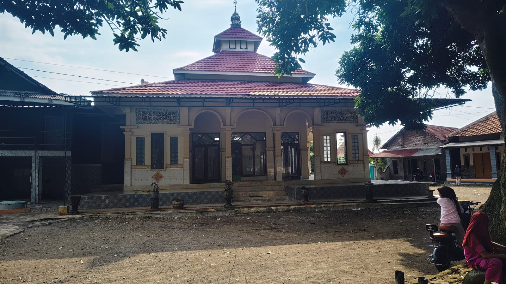
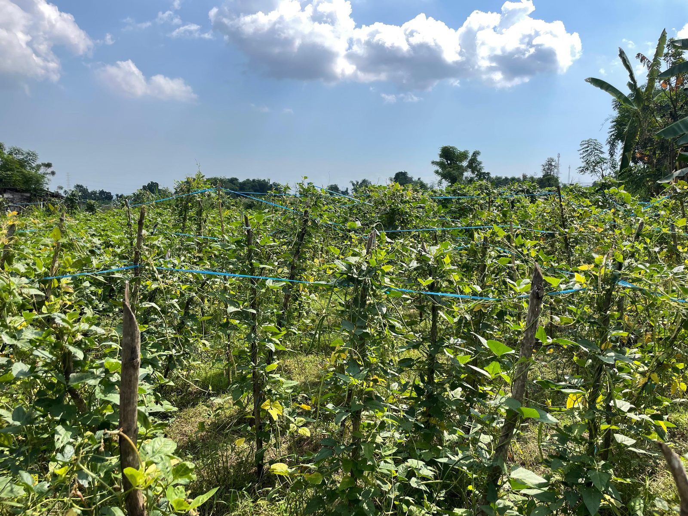

Tanah Pertanian yang Subur
Tanah Pertanian yang Subur Terletak di Kaki Gunung Rengganis
Terletak di Kaki Gunung Rengganis Terdapat 2 Aliran Sungai Aktif
Terdapat 2 Aliran Sungai Aktif 6 Dusun Berdampingan
6 Dusun BerdampinganDesa Gondosuli merupakan desa yang berada di kaki Gunung Rengganis dengan udara yang sejuk dan pemandangan alam yang masih asri. Desa ini terdiri dari enam dusun dengan kekayaan sumber daya mulai dari hasil pertanian, budaya, dan keindahan alam yang masih terjaga. Berbagai potensi tersebut menjadi bagian dari kehidupan masyarakat dan terus dikembangkan untuk meningkatkan kesejahteraan sekaligus menjaga kelestarian desa. Yuk, kenali Desa Gondosuli dan lihat berbagai hal menarik di desa kami.
Tanah Pertanian yang Subur Terletak di Kaki Gunung Rengganis Terdapat 2 Aliran Sungai Aktif 6 Dusun BerdampinganDesa pegunungan dengan enam dusun dan alam yang masih terjaga keasriannya.
Gondosuli merupakan desa yang terletak di Kecamatan Pakuniran, Kabupaten Probolinggo, Jawa Timur. Dikelilingi oleh alam pegunungan yang sejuk dari kaki Gunung Rengganis, desa ini menawarkan keindahan alam, kesuburan tanah, kelimpahan sumber daya alam dan tak lupa keramahan masyarakat yang melekat erat dalam kesehariannya.
Wilayah seluas 11,66 km² ini bebas dari bencana banjir, dilewati jalur kecamatan Kotaanyar–Pakuniran, serta memiliki tiga aliran sungai yang menghidupi pertanian warganya sepanjang tahunnya. Ketiga sungai tersebut adalah Sungai Pakes, Sungai Cekor, dan Sungai Ranon.
Desa Gondosuli memiliki enam dusun yang masing-masing memiliki komoditas alam yang beragam. Komoditas alam yang melimpah menjadikan desa ini pusat sekaligus produsen yang dikelola oleh warga desa, mulai dari panen hingga pengolahan pascapanen. Hasil alam ini juga menjadi bahan pokok untuk kehidupan para petani sehari-harinya.
Dusun yang menjadi pusat perekonomian Gondosuli dan pengolahan produk komoditas di berbagai dusun yaitu Dusun Krajan, terletak di pertengahan Desa Gondosuli dan memiliki akses pendidikan yang mumpuni serta fasilitas kesehatan berupa klinik. Kemudian Dusun Kletek yang memiliki gula aren sebagai komoditas paling diunggulkan, serta Dusun Durin yang menjadi produksi kopi terbesar dan pemasok kopi bagi desa maupun luar desa. Dusun Pakes dan Karangduwek memiliki komoditas tembakau yang unggul, dan Dusun Ranon memiliki majelis yang dilaksanakan secara rutin setiap minggunya.
Pakuniran
Probolinggo
Jawa Timur
67292
11,66 km²
6 Dusun
Sungai Pakes (Timur) · Sungai Cekor (Barat) · Sungai Ranon (Pusat)
Klik kartu dusun untuk membuka profil lengkap beserta informasi seputar kehidupan warganya.

Dusun berlereng perbukitan yang terbagi tiga zona ketinggian, dikenal dengan gula aren dan kopi, serta menyimpan peninggalan Majapahit yang dianggap sakral.

Dusun dataran tinggi dengan tembakau sebagai komoditas utama musim kemarau, dikenal karena banyak petaninya yang juga berperan sebagai tokoh agama (kyai).

Dusun di ujung barat Gondosuli dengan fondasi ekonomi kuat dari pertanian tembakau, padi, dan jagung, didukung UMKM pengrajin mebel dan minyak kelapa, serta kehidupan keagamaan yang aktif.

Dusun di kaki Gunung Rengganis yang terbagi menjadi Durin Barat dan Durin Timur, dengan mayoritas warga berprofesi sebagai petani di tanah yang subur.

Dusun di lereng Pegunungan Argopuro yang namanya berasal dari legenda ikan Rangon di sumber mata air sakral, dengan pertanian beragam dan kegiatan sosial-keagamaan yang aktif.

Pusat pemerintahan desa dengan kantor desa, klinik, masjid, dan lembaga pendidikan lengkap di pertengahan Gondosuli.
Sekilas informasi seputar kehidupan warga Desa Gondosuli dari berbagai bidang.
Pertanian menjadi salah satu penopang utama perekonomian Desa Gondosuli, mulai dari tembakau, padi, jagung, kopi, hingga gula aren yang tersebar di berbagai dusun mengikuti kondisi tanah dan ketinggian wilayah masing-masing.
Kehidupan keagamaan warga berjalan aktif lewat kegiatan rutin seperti pengajian, majelis, dan sholawatan di masjid maupun musala di tiap dusun, menjadi bagian penting dari kehidupan sosial masyarakat Gondosuli.
Akses pendidikan warga didukung oleh sejumlah lembaga mulai dari PAUD, TK, sekolah dasar, hingga madrasah dan pesantren yang tersebar di beberapa dusun untuk generasi muda Gondosuli.
Gondosuli berada di posisi strategis, dilewati jalur kecamatan Kotaanyar–Pakuniran.
7°54′S 113°36′E · Ketinggian ±400 mdpl
Angkutan Pakuniran–Kotaanyar · Ojek Motor
Sekilas potret alam, kehidupan, dan budaya desa yang memikat.
 🔍
🔍
 🔍
🔍
 🔍
🔍
 🔍
🔍
 🔍
🔍
.jpg) 🔍
🔍

🔍
🔍Temukan kami di Kecamatan Pakuniran atau hubungi langsung melalui saluran di bawah ini.
Desa Gondosuli, Kecamatan Pakuniran,
Kabupaten Probolinggo, Jawa Timur 67292
Pendopo Kepala Desa Gondosuli
Pusat Administrasi Pemerintahan Desa
+62 xxx-xxxx-xxxx
Tersedia pada jam pelayanan
Senin–Jumat: 08.00 – 15.00 WIB
Sabtu: 08.00 – 12.00 WIB
@desagondosuli
Instagram · Facebook
desa.gondosuli@probolinggokab.go.id